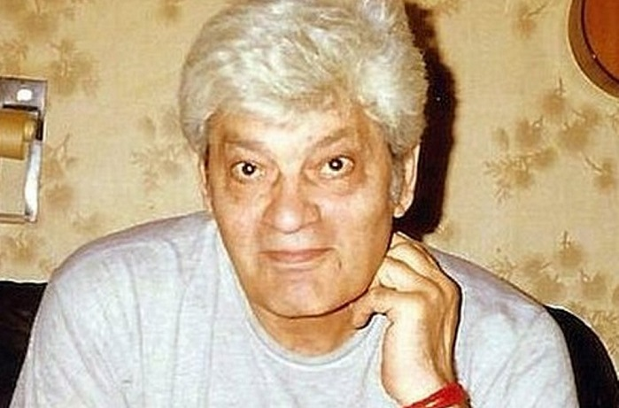

Պավել Արսենով
Կենսագրություն
Պավել Հովհաննեսի Արսենով (հունվարի 5, 1936, Թիֆլիս, ԽՍՀՄ - օգոստոսի 12, 1999, Մոսկվա, Ռուսաստան), հայ, խորհրդային դերասան և ռեժիսոր։ Ռուսաստանի Դաշնության արվեստի վաստակավոր գործիչ (1997)։
Պավել Արսենովը ծնվել է 1936 թվականի հունվարի 5-ին Թբիլիսիում։ Սովորել է Երկրաբանահետազոտական ինստիտուտում։ 1963 թվականին ավարտել է Կինեմատոգրաֆիայի համամիութենական պետական ինստիտուտի (ВГИК) ռեժիսուրայի ֆակուլտետը՝ Գրիգորի Ռոշալի արվեստանոց։
Մինչև սովորելն աշխատել է «Գրուզիա-ֆիլմ», Մոսկվայի գիտահանրամատչելի ֆիլմերի ստուդիայում։ 1962 թվականից աշխատել է Մ. Գորկու անվան կինոստուդիայում որպես ռեժիսոր։ Եղել է «Լադիա» կինոստուդիայի գեղարվեստական ղեկավարը՝ ստուդիայի կազմավորումից ի վեր։
Հայֆիլմում նկարահանվել է մի շարք ֆիլմերում։
Վախճանվել է 1999 թվականի օգոստոսի 12-ին Մոսկվայում։ Թաղված է Մոսկվայի Շչերբինսկի գերեզմանատանը։